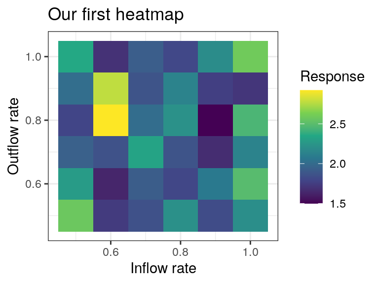
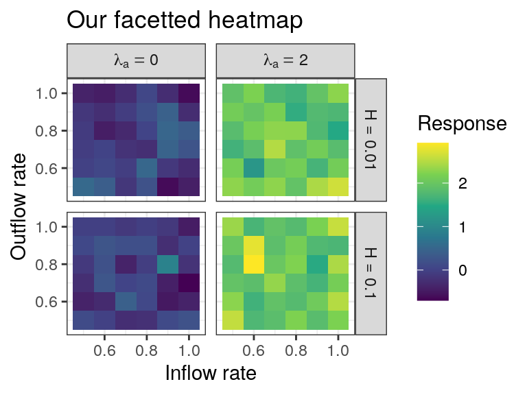
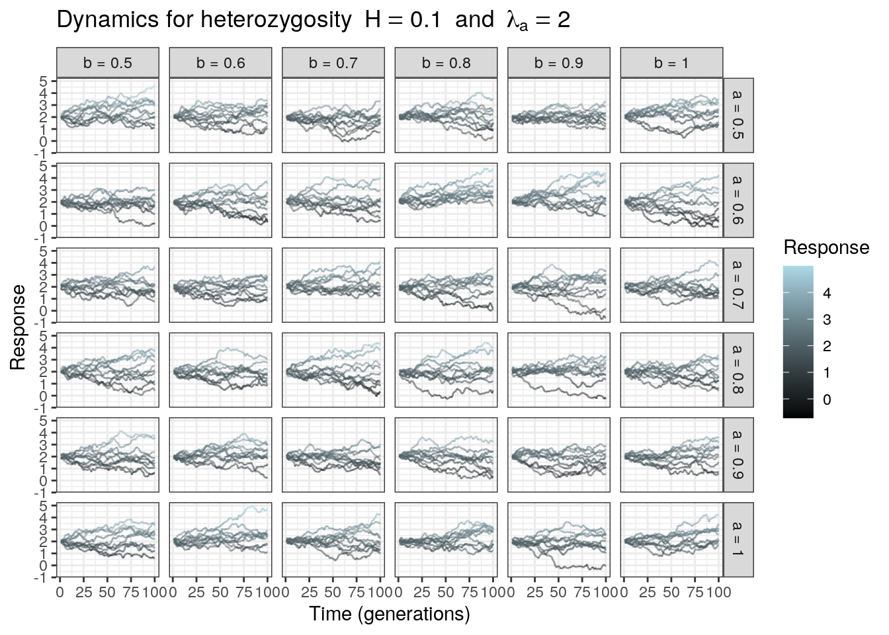
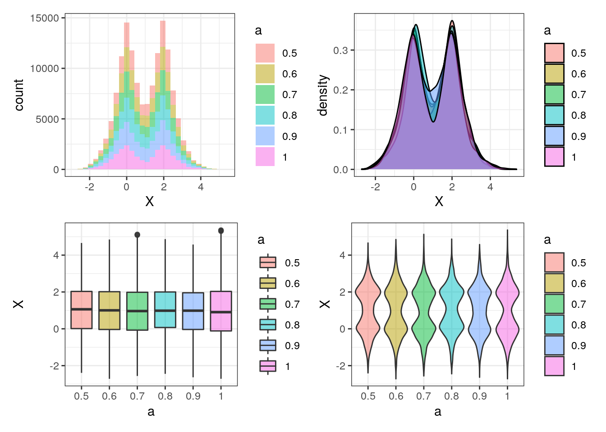

vignette.RmdThis package provides wrappers around ggplot2 to make plotting of typical simulation databases easier. Let us first load a simulation dataset. The dataset consists of one response variable X that we tracked through time across multiple replicate simulations and multiple combinations of parameters a, b, hzg and lambda_a. Throughout this vignette we will show multiple examples of plots can be made with ggsim using this dataset.
data <- readRDS("data/simulations.rds") head(data) #> a b hzg simulation lambda_a time X #> 1 0.5 0.5 0.01 1 0 1 0.13614786 #> 2 0.5 0.5 0.01 1 2 1 2.06761553 #> 3 0.5 0.5 0.01 2 0 1 0.07316144 #> 4 0.5 0.5 0.01 2 2 1 1.97856341 #> 5 0.5 0.5 0.01 3 0 1 -0.02590662 #> 6 0.5 0.5 0.01 3 2 1 1.93573067
Let us load the packages we need:
#devtools::install_github("rscherrer/ggsim") # if the package is not already installed library(tidyverse) library(ggsim) library(patchwork) # to assemble multiple plots in the same figure
All ggplot objects are very highly customizable, thanks to the grammar of graphics, such that new scales or aesthetics can subsequently be added to an already existing plot. The ggsim package aims at reducing the amount of code needed to produce types of plots that are commonly encountered in simulation studies. The type of plot customization (e.g. adding color scales) can be so diverse among users that we did not consider it worth it to allow for such customization from within the ggsim functions, since they can be done by adding regular ggplot2 layers to plots created with ggsim. We only implemented customization options needed by the geometries needed by ggsim upon creation and that cannot be added later (e.g. the number of bins in histograms). In this vignette we will show example code snippets on how to further customize our ggsim plots, but we refer the reader to the ggplot2 documentation for a more detailed overview of those.
Often in simulation studies we want an overview of the model behavior across parameter space. One good way to visualize this is through heatmaps. However, plotting a heatmap requires reducing the data to one observation per combination of the parameters in the space we want to see. Depending on the hierarchical structure of your data, this may involve a subsequent steps of summarizing across e.g. simulations, replicates or parameter combinations. For example, we may want to see how the value of X at the end of each simulation depends on parameters a and b. But there typically are multiple replicate simulations for each combination of a and b, so we may want to average the final value of X over all replicates, etc. Only when the data is reduced does it make sense to plot a heatmap to summarize our large simulation database.
The function ggheatmap does exactly that, performing subsequent summary steps before plotting:
hmp <- ggheatmap( data, "X", x = "a", y = "b", reduce = "simulation", how = c(last, mean) ) + scale_fill_continuous(type = "viridis") + labs(x = "Inflow rate", y = "Outflow rate", fill = "Response") + ggtitle("Our first heatmap") hmp

Here, the arguments reduce and how specify the summary steps to be taken. how takes a list or vector of functions, and the last one (here mean) is the one that will be applied across all repeated observations found for each tile at the end of the summary, to make sure that we end up with one value per tile. You can supply additional summary steps by providing more functions to how, each of them with its corresponding grouping variable in reduce. Here, we specify that before taking the mean across all value within a tile, we want to reduce each simulation to its final value using last. The functions supplied in how must take vectors in and return single values (e.g. mean, median, first…). Note that the summary steps are taken in the order they appear in reduce and how.
ggplot uses facet_grid and facet_wrap to split a plot into facets. Both can customize the labels of the facets by using the labeller argument, which can sometimes be difficult to handle for customized labels that may e.g. differ from the names of the facetting variables in the dataset, or include mathematical symbols, as is often the case in simulation data. We implemented facettize to facilitate the splitting of a plot into multiple facets, and the customization of the facet labels.
We can, for example, split the previous heatmap into multiple facet plots according to higher-order parameters, e.g. hzg and lambda_a. But before doing so, we must make sure that the shrunk dataset used to plot the heatmap has kept these extra parameters that were not used in making the non-facetted heatmap. This is because the default behavior of the shrink function used in ggheatmap is to throw away columns that are not used in the shrinking process. To keep some extra columns for further facetting, we use the keep argument:
hmp <- ggheatmap( data, "X", x = "a", y = "b", reduce = "simulation", how = c(last, mean), keep = c("hzg", "lambda_a") )
The plot is now ready to be facettized:
facettize( hmp, rows = "hzg", cols = "lambda_a", prepend = c(hzg = "H = ", lambda_a = "lambda[a]=="), parsed = "lambda_a", wrap = FALSE ) + scale_fill_continuous(type = "viridis") + labs(x = "Inflow rate", y = "Outflow rate", fill = "Response") + ggtitle("Our facetted heatmap")

Here, the arguments rows and cols specify the variables to use to facet by rows and columns, respectively. Setting wrap to TRUE makes the function call ggplot’s facet_wrap instead of facet_grid, so what variables are in rows or columns becomes irrelevant.
A prepend and append arguments are provided, which allow you to specify optional prefixes or suffixes to your facet labels, for example variable names, equal signs or units. For each of these arguments, you can provide named or unnamed vectors of labels. If the labels are named, the names should refer to the variable to apply the label to. If unnamed, the vector of labels must either contain one label, which will be recycled over all variables, or as many labels as there are variables, and they will be assigned in the order defined by rows first, then cols.
You can render mathematical expressions or greek letters in facet labels for a given variable. For this, write the prepend or append label as a plotmath expression for that variable, and add this variable’s name to the parsed argument. This will parse the expression and render it as needed. For more information about the plotmath syntax for mathematical notations, see the appropriate documentation (e.g. ?bquote).
Last, you can provide variable names to the header argument, and for these variables the variable name will be automatically prepended to the facet labels (with a separator defined in sep, defaulting to an equal sign), effectively overwriting the prepend argument.
We may also want to plot simulations through time, or against another continuous variable, resulting in many lines on the same plot. gglineplot takes this role, and can be combined with facettize to visualize the dynamics throughout parameter space.
lns <- data %>% filter(hzg == 0.1, lambda_a == 2) %>% gglineplot(x = "time", y = "X", line = "simulation") + aes(color = X) + scale_color_gradient(low = "black", high = "lightblue") + ggtitle(parse(text = '"Dynamics for heterozygosity" ~ H==0.1 ~ "and" ~ lambda[a]==2')) + labs(x = "Time (generations)", y = "Response", color = "Response") lns %>% facettize(rows = "a", cols = "b", header = c("a", "b"))

This functions uses a trick to plot many lines on the same plot without without all lines having to look very different: they all have a slightly different transparency, but this is not noticeable. This means, however, that the alpha aesthetics is already mapped by a variable, which is defined in line (here simulation). You can change the base transparency with the alpha argument and the variation in transparency between lines with the step argument.
The color argument allows to set a given color to all the lines. In most cases, however, one may want to color the lines according to an aesthetics, e.g. the value of the variable itself. This can be done by mapping an extra aesthetics from outside the function, as we did in the chunk of code above, using aes.
Note that line plots are more limited than heatmaps in showing overviews across high-dimensional parameter spaces. Here, we had to filter the data down to one specific value for parameters hzg and lambda_a to no overcrowd the figure with facets. You can make use of plot-combining utilities provided in packages such as egg, ggpubr, grid, patchwork or cowplot to assemble multiple facetted plots on the same figure (see next section for an example).
We may want to eyeball distributions across multiple categories, without knowing exactly which kind of visualization we want (density, histogram, boxplot..?). Then, ggdensityplot is our friend:
data$a <- factor(data$a) p1 <- ggdensityplot( data, "X", plot_type = "histogram", mapping = list(fill = "a"), alpha = 0.5 ) p2 <- ggdensityplot( data, "X", plot_type = "density", mapping = list(fill = "a"), alpha = 0.5 ) p3 <- ggdensityplot( data, "X", plot_type = "boxplot", x = "a", mapping = list(fill = "a"), alpha = 0.5 ) p4 <- ggdensityplot( data, "X", plot_type = "violin", x = "a", mapping = list(fill = "a"), alpha = 0.5 ) (p1 | p2) / (p3 | p4) # using patchwork

This makes it easier for you to explore your data and pick the right visualization that suits your needs, without having to code a lot. ggdensityplot has a number of parameters to further fine-tune the aspects of the plots, e.g. the number of bins in histograms, whether to add jitter, or whether to color the different groups at all.